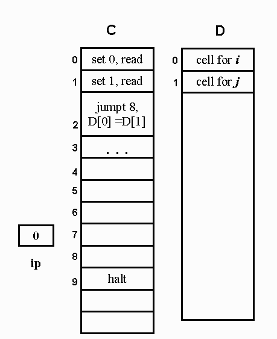
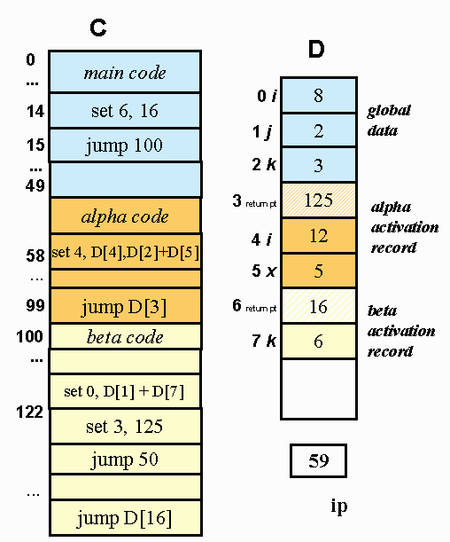
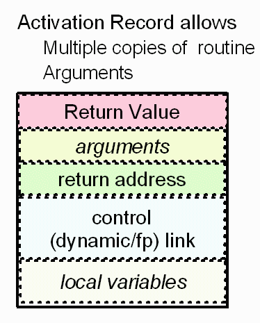
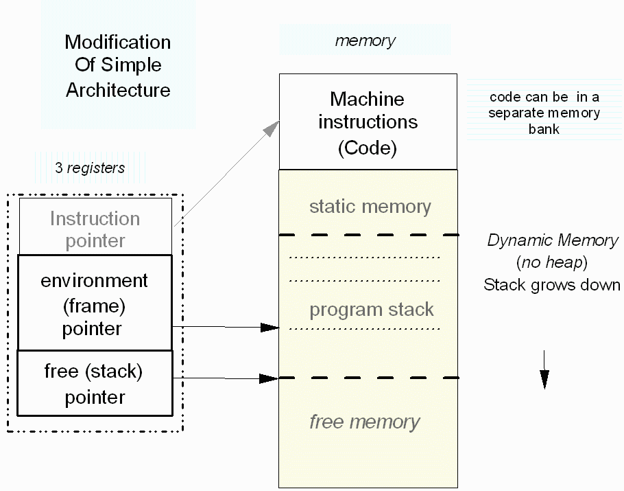
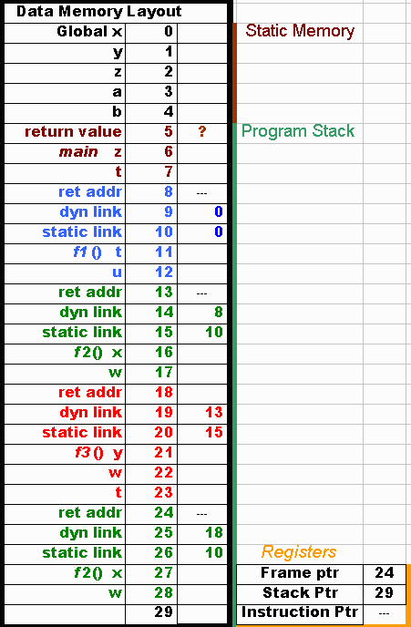

{kind=link}
{kind=link}
{kind=link}
{kind=link}

main () {
int i,j;
}
read(i,j);
while (i != j)
if (i > j)
i -= j;
else
j -= i;
print(i)

int i = 1, j = 2, k = 3;
void alpha() {int i = 4, x = 5;
void beta() {
...
i += k + x;
...
};int k = 6;
void main() {
...
i = j + k;
alpha();
...
};
...
beta();
...
}

Adding recursion and parameter passing: C3
First goal is to add the ability to pass parameters.
Modify activation record by adding more fields to allow parameters to be passed
The AR (activation record) associated with each routine remain a fix size For this lecture the value of the variables passed will be copied into these additional fields. Other semantics of parameter passing will be treated later. Next, the main goal of this section, is to be enable the allocation of new memory each time the routine is called. This will allow multiple calls to a routine even if the routine has not be terminated. Therefore our new model will allow recursion.
Note: 1) The allocation of some data memory must now be done during runtime.
2) As before the instructions are bound to memory locations by load time.
Each call to the routine will create a new activation record
Each call of the routine must have it's own local variables. An efficient way to create new AR and remove AR when the routine's work is completed is to use a program stack to dynamically allocate/deallocate memory for the AR Addition field in AR to increase runtime speed of deleting AR and restoring previous AR.


Example of Program stack for local(automatic) variables
Example: Program reads the value n = 3.
A dynamic link (control link)
is a
reference (points) to the activation record of the calling routine.
(ex. The red fp (dynamic link) points to the blue activation
record because the blue function called the red one.
Environment pointer
(ep) (also
called the frame
pointer) is the register
which points to the current environment (i.e activation record (local
data)) Implementation dependent where in the AR the current
the ep
points to., we will point to the
first field.
Stack ptr is the register which points to the next free space on the stack (data memory).
Instruction ptr is the register which the address of the instruction currently be executed (in this snapshot) The instruction address is in code memory and not shown.
# nested functions in Python
def f1():
x = "f1's x"
def f2():
def f3():
y = "f3's y"
print x
f3()
### y is not in scope here
f2()
|  |
|
program binding_example (input, output);
procedure A (I: integer; procedure P);
procedure B;begin (*A*)
begin
writeln (I);
end; (* end of B *)
if I > 1 thenend; (* end of A*)
P
else
A(2,B);
procedure C; begin end;
begin (*main*)
A ( 1, C );
end
I is NOT local to "B".
When P is called it is "B"
The question is --
Where is "B" bound to
the "A" where "B" is declared
or
the "A" where "B" is passed to?
Deep binding :
output 1
Shallow binding:
output 2
Example Scott 139
#nested
blocks in Python,